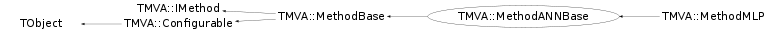

class TMVA::MethodANNBase: public TMVA::MethodBase
Base class for all TMVA methods using artificial neural networks
Function Members (Methods)
This is an abstract class, constructors will not be documented.
Look at the header to check for available constructors.
public:
protected:
private:
| void | AddPreLinks(TMVA::TNeuron* neuron, TObjArray* prevLayer) |
| void | BuildLayer(Int_t numNeurons, TObjArray* curLayer, TObjArray* prevLayer, Int_t layerIndex, Int_t numLayers, Bool_t from_file = false) |
| void | BuildLayers(vector<Int_t>* layout, Bool_t from_file = false) |
| void | DeleteNetwork() |
| void | DeleteNetworkLayer(TObjArray*& layer) |
| void | ForceWeights(vector<Double_t>* weights) |
| void | InitWeights() |
| void | PrintLayer(TObjArray* layer) const |
| void | PrintNeuron(TMVA::TNeuron* neuron) const |
Data Members
public:
| enum EEstimator { | kMSE | |
| kCE | ||
| }; | ||
| enum TMVA::MethodBase::EWeightFileType { | kROOT | |
| kTEXT | ||
| }; | ||
| enum TObject::EStatusBits { | kCanDelete | |
| kMustCleanup | ||
| kObjInCanvas | ||
| kIsReferenced | ||
| kHasUUID | ||
| kCannotPick | ||
| kNoContextMenu | ||
| kInvalidObject | ||
| }; | ||
| enum TObject::[unnamed] { | kIsOnHeap | |
| kNotDeleted | ||
| kZombie | ||
| kBitMask | ||
| kSingleKey | ||
| kOverwrite | ||
| kWriteDelete | ||
| }; |
public:
| Bool_t | TMVA::MethodBase::fSetupCompleted | is method setup |
| const TMVA::Event* | TMVA::MethodBase::fTmpEvent | ! temporary event when testing on a different DataSet than the own one |
protected:
| TMVA::TActivation* | fActivation | activation function to be used for hidden layers |
| TMVA::Types::EAnalysisType | TMVA::MethodBase::fAnalysisType | method-mode : true --> regression, false --> classification |
| UInt_t | TMVA::MethodBase::fBackgroundClass | index of the Background-class |
| vector<TH1*> | fEpochMonHistB | epoch monitoring hitograms for background |
| vector<TH1*> | fEpochMonHistS | epoch monitoring hitograms for signal |
| vector<TH1*> | fEpochMonHistW | epoch monitoring hitograms for weights |
| TMVA::MethodANNBase::EEstimator | fEstimator | |
| TH1F* | fEstimatorHistTest | monitors convergence of independent test sample |
| TH1F* | fEstimatorHistTrain | monitors convergence of training sample |
| TString | fEstimatorS | |
| TMVA::TActivation* | fIdentity | activation for input and output layers |
| TMVA::TNeuronInput* | fInputCalculator | input calculator for all neurons |
| vector<TString>* | TMVA::MethodBase::fInputVars | vector of input variables used in MVA |
| TMatrixD | fInvHessian | zjh |
| vector<Float_t>* | TMVA::MethodBase::fMulticlassReturnVal | holds the return-values for the multiclass classification |
| Int_t | TMVA::MethodBase::fNbins | number of bins in input variable histograms |
| Int_t | TMVA::MethodBase::fNbinsH | number of bins in evaluation histograms |
| Int_t | TMVA::MethodBase::fNbinsMVAoutput | number of bins in MVA output histograms |
| TObjArray* | fNetwork | TObjArray of TObjArrays representing network |
| TMVA::TActivation* | fOutput | activation function to be used for output layers, depending on estimator |
| Int_t | fRandomSeed | random seed for initial synapse weights |
| TMVA::Ranking* | TMVA::MethodBase::fRanking | pointer to ranking object (created by derived classifiers) |
| vector<Float_t>* | TMVA::MethodBase::fRegressionReturnVal | holds the return-values for the regression |
| vector<Int_t> | fRegulatorIdx | index to different priors from every synapses |
| vector<Double_t> | fRegulators | the priors as regulator |
| UInt_t | TMVA::MethodBase::fSignalClass | index of the Signal-class |
| TObjArray* | fSynapses | array of pointers to synapses, no structural data |
| bool | fUseRegulator | zjh |
| TRandom3* | frgen | random number generator for various uses |
private:
| TObjArray* | fInputLayer | cache this for fast access |
| TString | fLayerSpec | layout specification option |
| Int_t | fNcycles | number of epochs to train |
| TString | fNeuronInputType | name of neuron input calculator class |
| TString | fNeuronType | name of neuron activation function class |
| vector<TNeuron*> | fOutputNeurons | cache this for fast access |
| static const Bool_t | fgDEBUG | debug flag |
Class Charts
{kind=link}
{kind=link}
{kind=link}
{kind=link}

Function documentation
void DeclareOptions()
define the options (their key words) that can be set in the option string
here the options valid for ALL MVA methods are declared.
know options: NCycles=xx :the number of training cycles
Normalize=kTRUE,kFALSe :if normalised in put variables should be used
HiddenLayser="N-1,N-2" :the specification of the hidden layers
NeuronType=sigmoid,tanh,radial,linar : the type of activation function
used at the neuronn
vector<Int_t>* ParseLayoutString(TString layerSpec)
parse layout specification string and return a vector, each entry containing the number of neurons to go in each successive layer
void BuildNetwork(vector<Int_t>* layout, vector<Double_t>* weights = NULL, Bool_t fromFile = kFALSE)
build network given a layout (number of neurons in each layer) and optional weights array
void BuildLayer(Int_t numNeurons, TObjArray* curLayer, TObjArray* prevLayer, Int_t layerIndex, Int_t numLayers, Bool_t from_file = false)
build a single layer with neurons and synapses connecting this layer to the previous layer
void AddPreLinks(TMVA::TNeuron* neuron, TObjArray* prevLayer)
add synapses connecting a neuron to its preceding layer
void ForceNetworkInputs(const TMVA::Event* ev, Int_t ignoreIndex = -1)
force the input values of the input neurons force the value for each input neuron
void PrintMessage(TString message, Bool_t force = kFALSE) const
print messages, turn off printing by setting verbose and debug flag appropriately
Double_t GetMvaValue(Double_t* err = 0, Double_t* errUpper = 0)
get the mva value generated by the NN
const std::vector<Float_t> & GetMulticlassValues()
get the multiclass classification values generated by the NN
void ReadWeightsFromStream(istream& istr)
destroy/clear the network then read it back in from the weights file
const TMVA::Ranking* CreateRanking()
compute ranking of input variables by summing function of weights
void CreateWeightMonitoringHists(const TString& bulkname, vector<TH1*>* hv = 0) const
void SetNeuronInputCalculator(TMVA::TNeuronInput* inputCalculator)